WERSJA EUROPEJSKA!!!
Dzień dobry, do sprzedania mam bardzo ładny egzemplarz Forda Explorera w absolutnie pełnej wersji z hybrydowym silnikiem. nie jest to wersja USA najczęściej po wielu przejściach… światła fabrycznie dostosowane do warunków europejskich. Explorer ma łącznie 465 koni oraz 820 Nm. W połączeniu z 10 biegowym automatem i układam hybrydowym daje to niesamowite Osiągi dotychczas niedostępne dla samochodów SUV przy jednocześnie bardzo niskim zużyciu paliwa, przy jeździe miejskiej w „wokół komina” i doładowywaniu z gniazdka samochód pali nawet poniżej 4 l. Szybka jazda autostradowa to około 12 l. Średnio wychodzi między 7 a 8 l na 100 km. Samochód jest w 100% bezwypadkowy, poza mną miał tylko jednego właściciela we Francji. Jest świeżo po serwisie ASO FORD. Jest to absolutnie pełna wersja Platinium – nie można było kupić lepszej wersji wyposażenia. samochód wyposażony jest właściwe wszystko co jest dostępne w nowoczesnych autach, a zaczynając od w pełni elektrycznych siedzeń lusterek szyb szyberdachu podwójnego poprzez masaże w siedzeniach wentylację siedzeń światłach dynamicznych full led podwójnych szybach bocznych dla lepszego komfortu, a kończąc na systemie grającym Bang&Olufsen czy tunerze DAB. System nie samodzielnego parkowania czy asystenty jazdy dopełniają obrazu. Ani jeden element nie był powtórnie lakierowany. Na ten moment samochód po pełnym Detalingu oraz nałożeniu elastomerowej i powłoki pięcioletniej z certyfikatem i gwarancji. Dwa komplety nowych opon. Samochód zarejestrowany na moją firmę, sprzedaje na podstawie faktury VAT. W razie jakichkolwiek pytań pozostaje do dyspozycji. Możliwa zamiana na mniejsze i tańsze auto lub jakieś ciekawe (wtedy moge dopłacić nawet).
 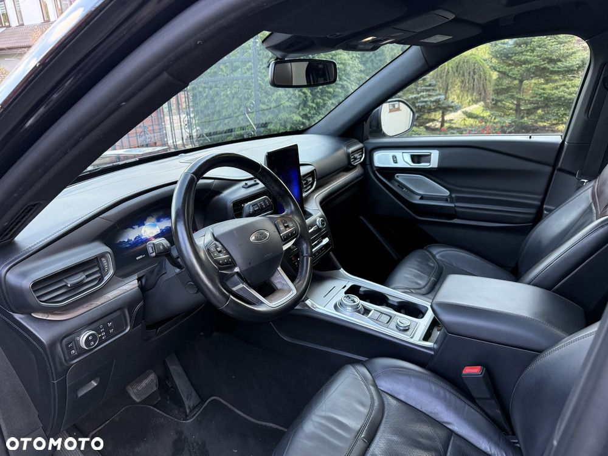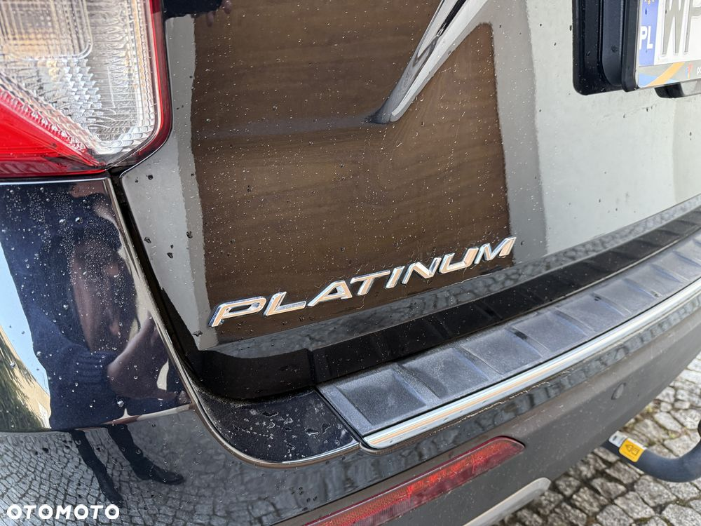
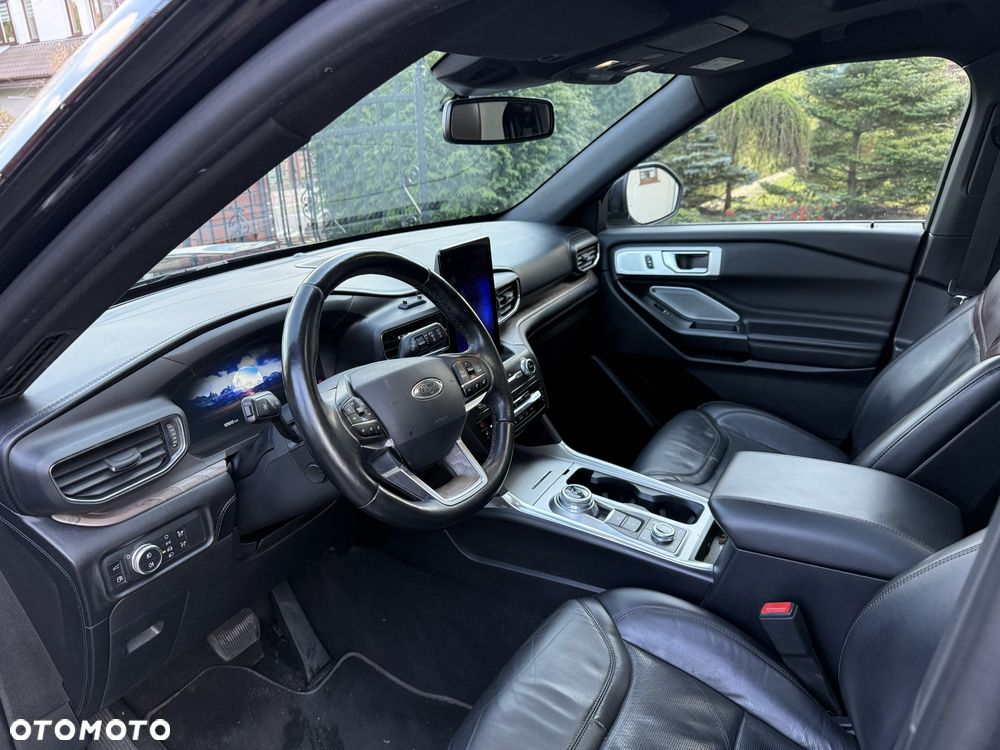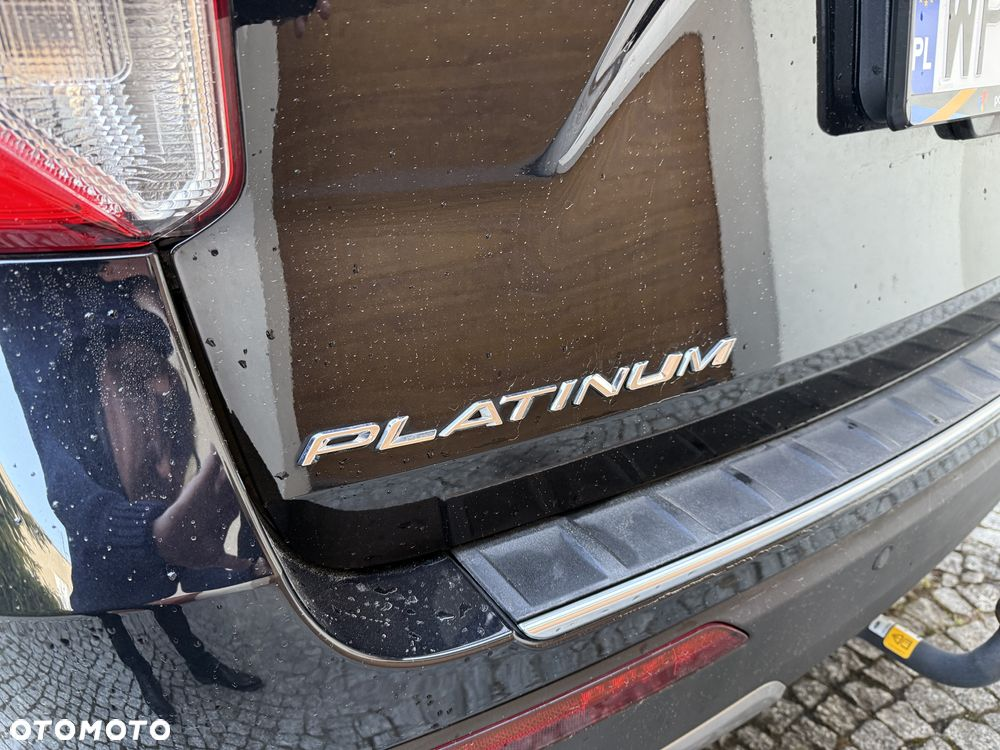 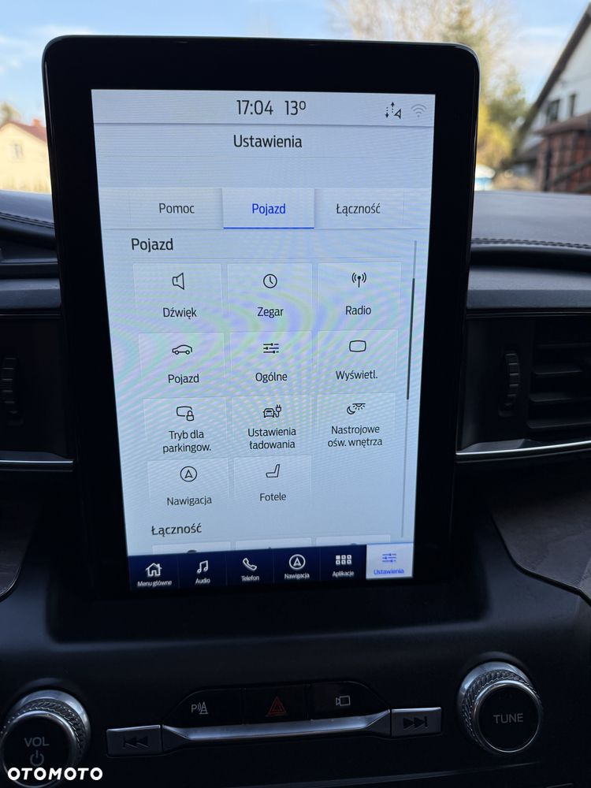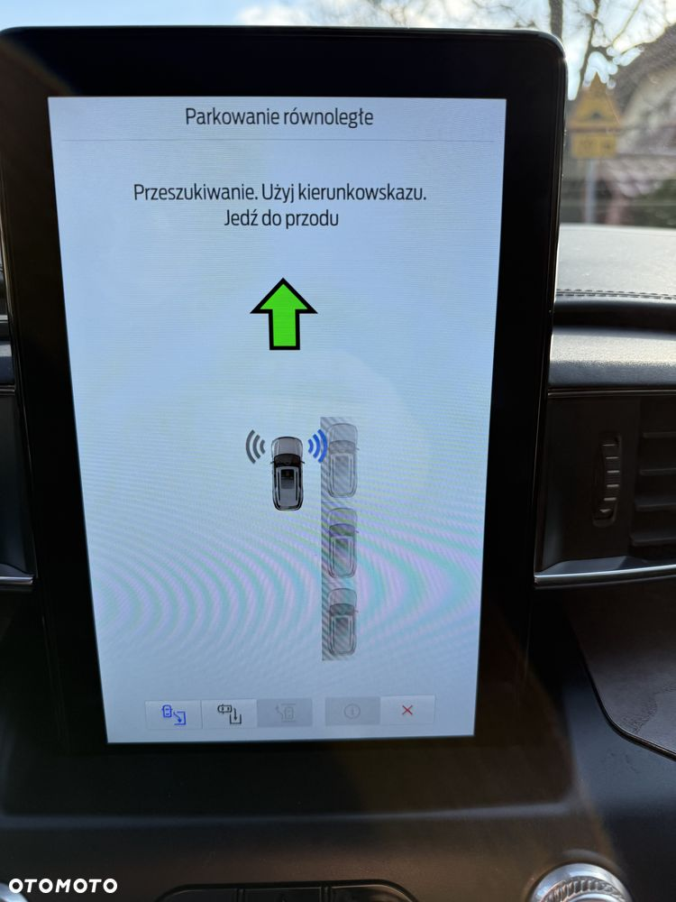
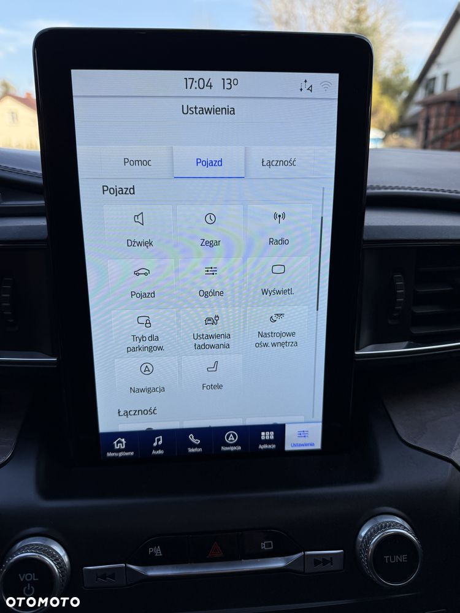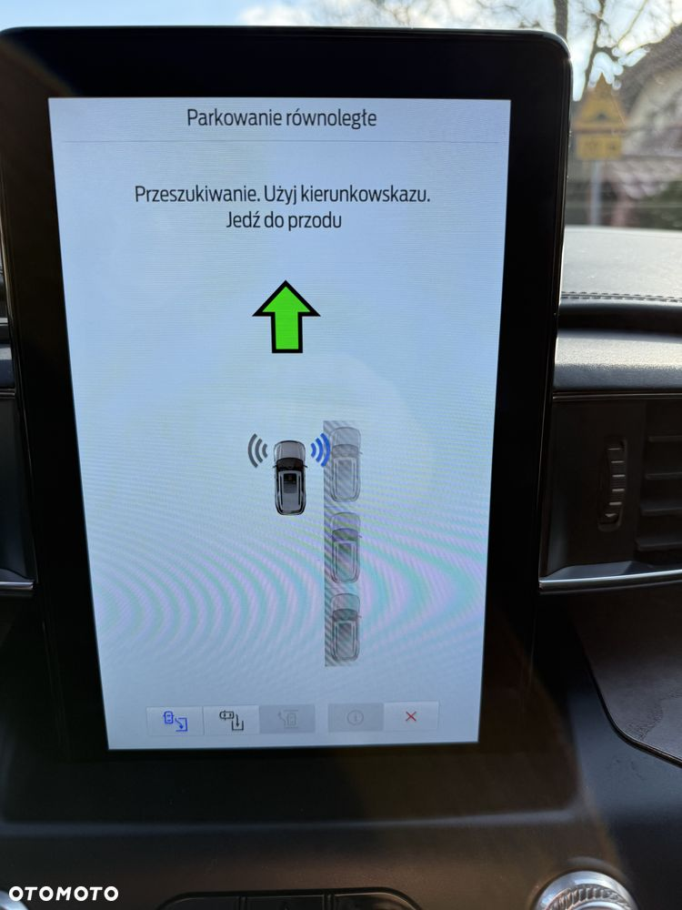 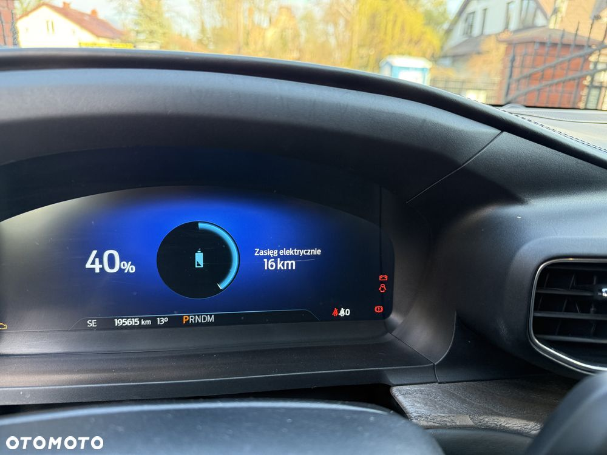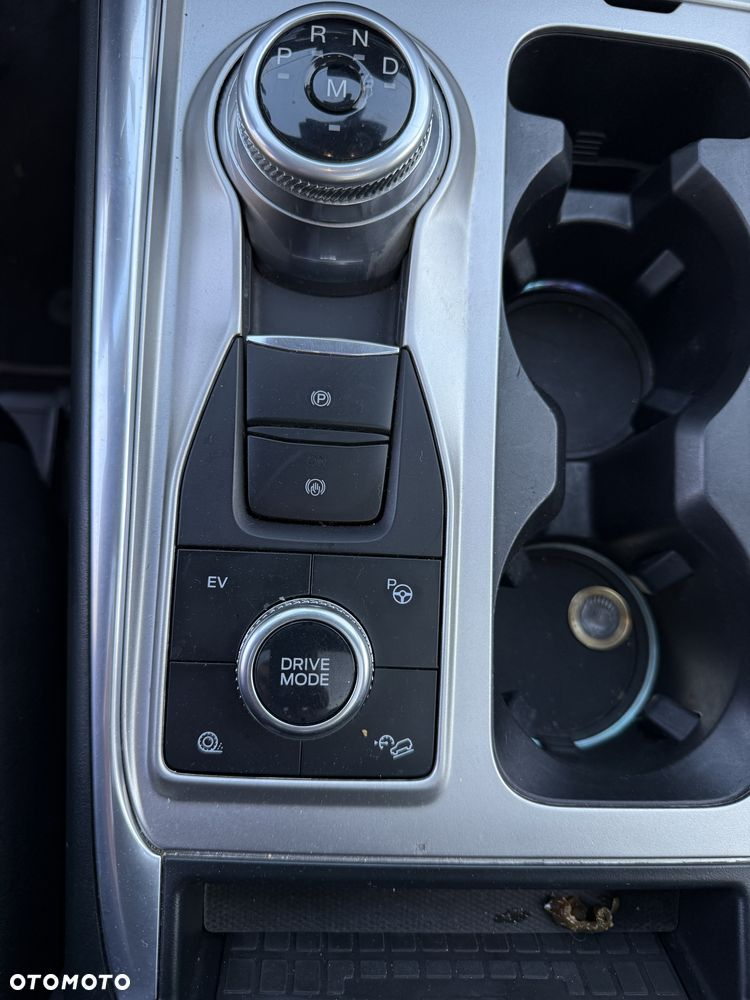
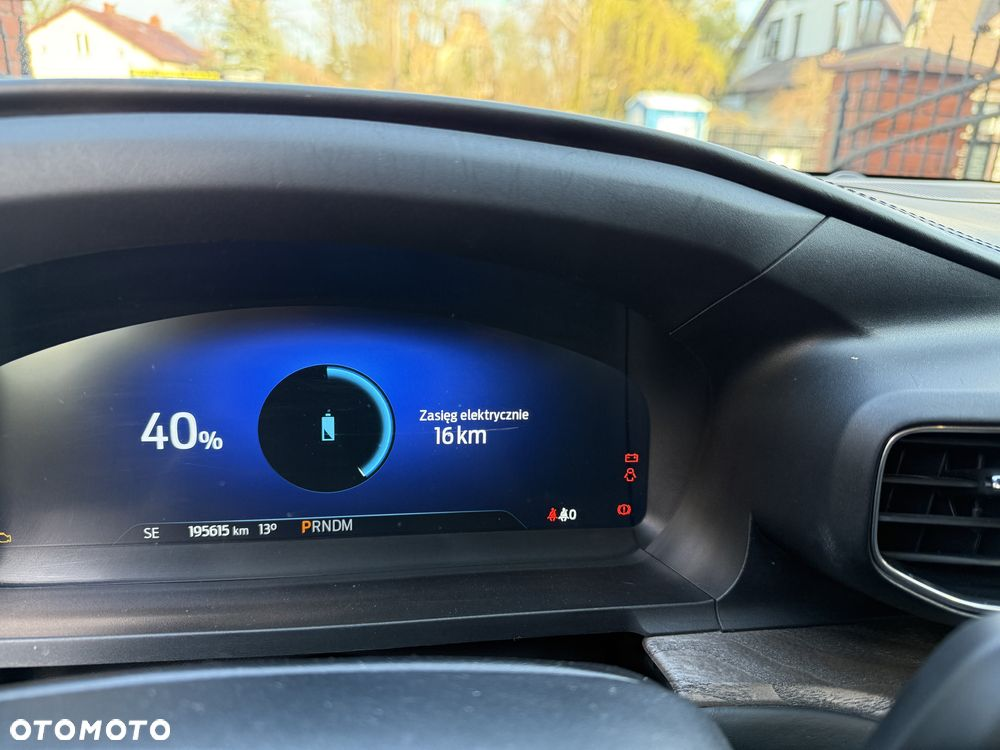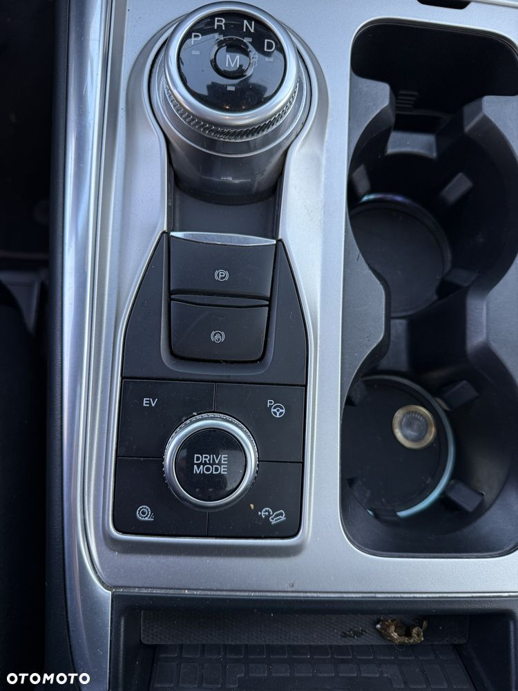